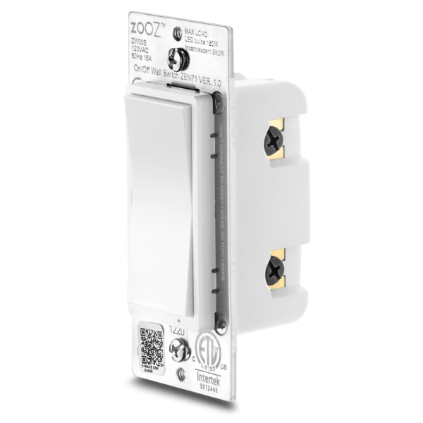
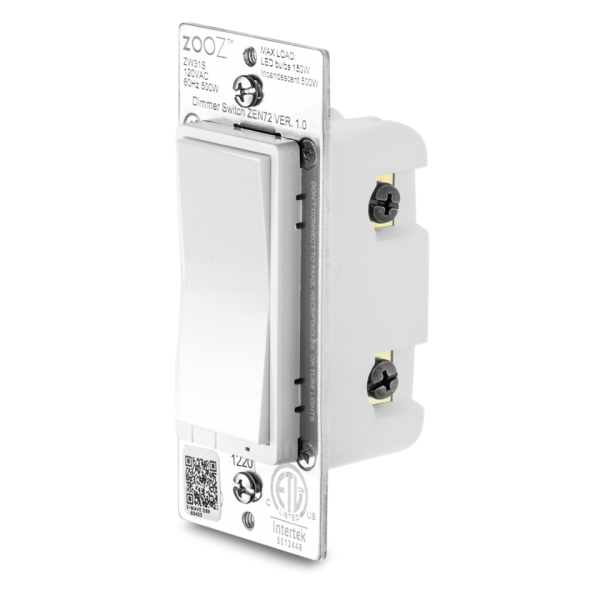
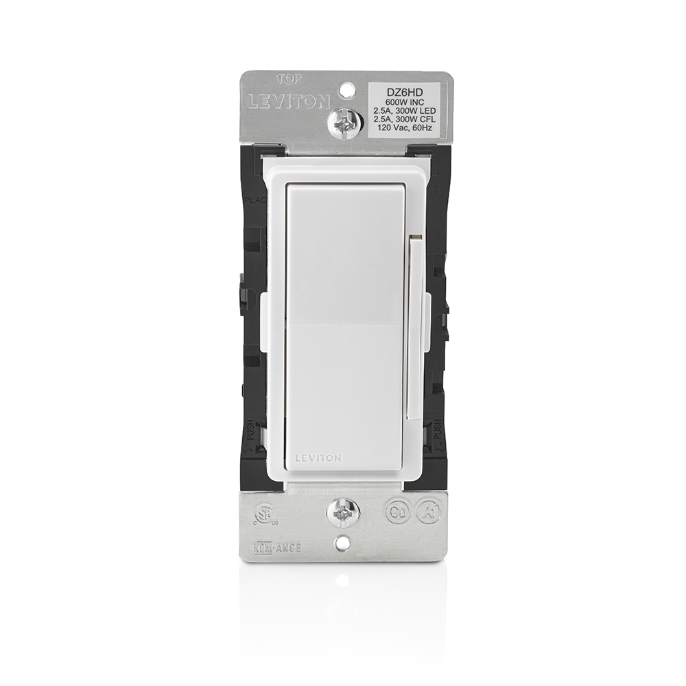

Buyer's guide · Z-Wave
The best Z-Wave light switch for Home Assistant (2026)
A Z-Wave light switch is the least glamorous purchase in a smart home and the one you will still be using in ten years. It replaces the wall switch, keeps working when the software doesn't, and joins a mesh that is deliberately slower and smaller than Wi-Fi. If you are already committed to Z-Wave, the shortlist is short: Zooz's 700-series wall switches for price and configurability, Leviton's Decora Smart line for certified build quality and a genuine 3-way without an add-on module.
Our pick for most boxes is the Zooz ZEN71 if you want on/off and the Zooz ZEN72 if you want dimming, because both run the same platform, both pair by SmartStart, and both take a regular switch as a 3-way companion. Choose the Leviton DZ6HD dimmer when you want a mainstream brand, a bigger LED load rating, or a faceplate that can be re-coloured without replacing the switch.
One caveat before you read further: everything on this list needs a neutral wire in the box, and everything on this list needs a Z-Wave controller. Neither is negotiable. The rest is detail.

At a glance
| Switch | Type | 3-way | Best for |
|---|---|---|---|
| Zooz ZEN71 | On/off | Regular switch as traveller, no companion module | The default choice for non-dimmable loads |
| Zooz ZEN72 | Dimmer | Same 700-series platform | Tuning ramp rate and minimum brightness |
| Leviton DZ6HD | Dimmer | Traveller optional, no add-on module | Big LED loads, mainstream brand, colour kits |
| Zooz ZEN73 / ZEN75 | Toggle / heavy duty | Toggle SKUs are separate models | Old toggle faceplates and heavy loads |
1. Zooz ZEN71: the on/off switch to start with
The ZEN71 is the non-dimming model in Zooz's 700-series wall switch line. That matters more than it sounds: plenty of houses have a switch that runs a fluorescent tube, a fan, or a receptacle, and a dimmer in that box is the wrong device. An on/off switch rated for the load is the right one.
Wiring is single pole, or 3-way using a regular switch in the other box, with no add-on or traveller companion to buy. Zooz supports SmartStart for inclusion, so the switch can be added by scanning a code rather than running the classic inclusion dance, and it supports over-the-air firmware updates where the hub does. Because the switches are mains-powered, they also repeat the mesh: Zooz describes the line as expanding the range of the network, which is the quiet reason to buy wall switches instead of smart bulbs in a Z-Wave house. LED indicator colour and behaviour, plus the power-failure state, are set through hub parameters.
Check Zooz ZEN71 on Amazon. Full source: Zooz ZEN71 product page.
2. Zooz ZEN72: the dimmer with the knobs you actually want
The ZEN72 is the dimmer version of the same platform, which means the installation story is identical and only the load changes. What it adds is tunability: ramp rate, manual dimming speed and minimum brightness are configurable, and the switch reports on/off state and brightness to the hub immediately after a paddle tap, so automations do not lag behind the physical switch.
There are four LED indicator colours and paddle colour-replacement kits for faceplate matching, and Zooz builds the ZEN72 with reduced depth for crowded or shallow boxes, which is the specification that decides whether a job takes twenty minutes or an afternoon. SmartStart is supported, as on the ZEN71.
Check Zooz ZEN72 on Amazon. Full source: Zooz ZEN72 product page.

3. Leviton Decora Smart DZ6HD: the conservative pick
Leviton sells the 600W Decora Smart with Z-Wave Plus Technology Dimmer as model DZ6HD-1BZ. It is a dimmer, not an on/off switch, and the load ratings are the reason to consider it: 300W of dimmable LED or CFL, 600W of incandescent and fluorescent.
Hot, neutral, load and ground are all required. For multi-switch (3-way) applications a traveller is optional and no add-on module is needed, which is the same convenience Zooz offers by a different route. Faceplate colour is a separate accessory, the DDKIT, available in black, gray, brown, light almond, ivory and white, so a kitchen remodel does not mean new switches.
The same family includes a 15A Decora Smart Z-Wave Plus switch and a 1000W dimmer for heavier loads. Leviton's page did not expose model numbers for those two during this pass, so treat them as names to look up rather than part numbers to quote.
Check Leviton DZ6HD on Amazon. Full source: Leviton DZ6HD product page.

4. Match the faceplate, not the SKU
A detail that catches people mid-order: Decora-style and toggle paddle are separate models, not adapters. Zooz's own switch range lists the ZEN71 on/off switch, the ZEN72 dimmer, the ZEN73 S2 toggle switch, the ZEN74 S2 toggle dimmer, the ZEN75 heavy duty wall switch, the ZEN76 S2 700-series switch and the ZEN77 S2 dimmer. If the rest of the house is old toggle switches, buying a Decora paddle means a new faceplate in that room; buying the toggle SKU means it matches. Decide before you order, because the function and the face are priced and shipped separately.
What not to buy by mistake
Two traps. First, Inovelli's Red Series is real, and Inovelli's own navigation lists it alongside the White Series (Matter/Thread) and Blue Series (Zigbee) — but the product detail page returned a 404 during this pass and the collection page rendered only navigation, so we are not quoting model numbers, load ratings or anything else about it here. Look it up directly before buying.
Second, Aqara. Aqara's switch line, including the T1, is Zigbee, not Z-Wave. It will not join a Z-Wave network regardless of which adapter you own. If you are still choosing a radio, read Zigbee vs Z-Wave before you buy six of anything.
The hub side: what has to exist for the switch to be smart
Home Assistant's Z-Wave integration controls a network through a Z-Wave adapter and a Z-Wave JS server. The standard path is to plug the adapter into the Home Assistant host, which installs the Z-Wave JS app. From there the integration covers the things buyers ask about after the fact: SmartStart as an alternative to classic inclusion, S2 security keys, network backup and restore, migrating to a new adapter, and pushing firmware updates to devices from inside Home Assistant. The docs version shown during this pass was 2026.11.0.
If you have not bought a controller yet, start with our guide to choosing a Z-Wave hub. The short version: one adapter, one network, and back up the stick before you touch anything.
Installing one, in order
- Kill the breaker. Confirm with a tester at the switch, not by the light going out.
- Check for a neutral bundle in the box. No neutral, no Z-Wave wall switch from this list.
- Photograph the existing wiring before you disconnect it, including the traveller in a 3-way.
- Wire hot, neutral, load and ground. In a 3-way, follow the manufacturer's diagram for the traveller and leave the other box's regular switch in place.
- Restore power. The switch should click or light its indicator before it is ever paired.
- Pair by SmartStart if the hub supports it, otherwise run classic inclusion from the Z-Wave integration, holding the paddle as the manual instructs.
- Set the parameters you care about — indicator colour, ramp rate, minimum brightness, power-failure state — then rename the entity before you build automations on it.
- Back up the Z-Wave network once the switch is in and responding. Doing it after the second switch is easier than after the tenth.
Gotchas worth knowing before the electrician arrives
Dimming a load that shouldn't be dimmed. If the circuit feeds a receptacle, a fan motor or a fluorescent fixture, buy the on/off switch (ZEN71) rather than a dimmer. A dimmer in that box is a fire-risk conversation, not a preference.
Low-wattage LED flicker. The LED rating is the one that matters. Leviton's 300W LED figure is generous for a residential circuit, but dimming behaviour at the bottom of the range varies by bulb, so keep one make and model across a circuit and test before you buy a case.
The mesh is built from mains devices. Battery devices do not repeat. Every one of these switches makes the network stronger; a house full of Z-Wave sensors and no switches is a fragile network.
Local by default, cloud only if you add it. Z-Wave itself needs no account and no internet. Your automations run on the controller. If a vendor app is part of your plan, that is a separate cloud dependency you are choosing, not one the protocol imposes.
Firmware is not automatic. Over-the-air updates exist on both the Zooz line and through Home Assistant's integration, but they only happen when you trigger them, and only where the hub supports OTA for that device.
Related
- Choosing a Z-Wave hub or adapter for Home Assistant
- Shelly in Home Assistant — the Wi-Fi alternative when you cannot pull a neutral
- Z-Wave door locks — same network, same stick, different failure modes
- Zigbee vs Z-Wave
FAQ
Do Z-Wave light switches need a neutral wire?
The switches below do. Leviton's DZ6HD specifications list hot, neutral, load and ground as required, and Zooz's 700-series wall switches are wired into the mains circuit in the box. If your switch box only has a hot and a switched leg, a battery-powered Z-Wave scene controller or a no-neutral switch from another line is the practical route; nothing on this shortlist works without a neutral.
Can a Z-Wave switch work in a 3-way circuit without an add-on switch?
Yes for both picks here. Leviton says the DZ6HD takes an optional traveler for multi-switch applications and needs no add-on module, and Zooz says the ZEN71 handles single pole or three-way using a regular switch in the other box.
Do Z-Wave switches work without a hub or the internet?
They work without the internet, because the radio link is local. You still need a controller: a Z-Wave adapter plus the Z-Wave JS server, which in Home Assistant is normally the Z-Wave JS app installed when you plug in the adapter. Physical paddle operation continues even if the controller is down, because the switch is the load-bearing device.
Z-Wave switch vs Zigbee: do I need a different hub?
You need a different radio, not necessarily a different hub. Home Assistant talks to either through an adapter: a Z-Wave adapter for Z-Wave, a Zigbee coordinator for Zigbee. The two protocols do not interoperate, so a Zigbee coordinator cannot hear a Z-Wave switch.
Will a Z-Wave dimmer work with dimmable LED bulbs at low wattage?
Check the LED rating, not the incandescent one. Leviton rates the DZ6HD at 300W of dimmable LED or CFL against 600W incandescent and fluorescent. A handful of low-wattage LED bulbs sits far below that ceiling, but dimming quality at the bottom of the range still varies by bulb, so keep the make and model consistent across a circuit.
Is an Aqara T1 switch Z-Wave?
No. Aqara's switch line is Zigbee, not Z-Wave, and it will not join a Z-Wave network no matter which adapter you buy. If you already run Z-Wave, buy a Z-Wave switch; if you are choosing a radio from scratch, read Zigbee vs Z-Wave first.
- Primary sources
- Zooz ZEN71 on/off switch; Zooz ZEN72 dimmer; Leviton DZ6HD-1BZ; Home Assistant Z-Wave integration; Inovelli Red Series
As an Amazon Associate, HA News earns from qualifying purchases.